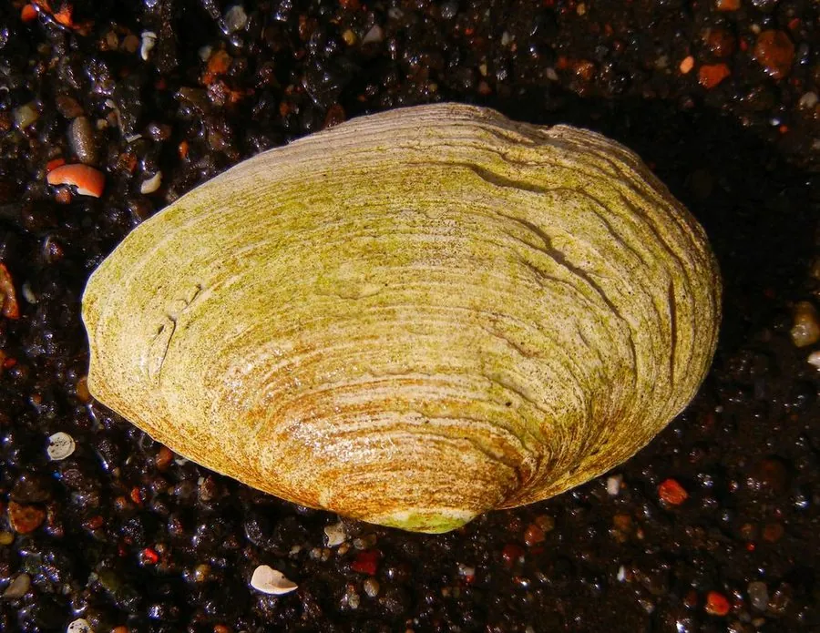

软体动物 · 动物界
砂海螂 Mya arenaria

壳薄而脆、水管极长的双壳类，深潜于潮间带泥沙中，原产北美，随船舶传入欧洲，是常见的入侵贝类。
- 分类
- 门软体动物门纲双壳纲目海螂目科海螂科属海螂属
- 栖息环境
- 潮间带中下区至浅海的泥沙底与黏土底，潜居深达三十厘米
- 地理分布
- 原产北美大西洋沿岸，现广布北大西洋两岸，中国北方沿海有记录
- 保护级别
- 尚无保护级别；在入侵地与本地贝类竞争
物种志
砂海螂的贝壳呈长卵形，壳长可达十至十五厘米，前端宽圆，后端收窄成喙状，壳质薄而脆，壳面灰白至污白色，常带褐色的污渍和细密的生长纹，壳顶略偏向前端。两壳闭合不严，后端留有较宽的缝隙，供长长的水管伸出。它的水管愈合成长管状，伸展长度可达壳长的数倍，末端有分支的触手。
它原产于北美大西洋沿岸，十九世纪随船舶压舱水和引入养殖传入欧洲，现广布于北大西洋两岸，在中国北方沿海也有记录，栖息在潮间带中下区至浅海的泥沙底和黏土底，靠足部挖掘，潜居深度可达三十厘米，退潮后缩入洞中，涨潮时伸出长水管滤食浮游藻类和有机碎屑。它雌雄异体，繁殖期在春夏，幼虫浮游后附着变态，生长较慢。它在北美是重要的食用贝类，但在入侵地会与本地贝类竞争，目前尚无保护级别。
形态与习性
- 壳长可达十至十五厘米，薄而脆
- 壳形长卵形，前宽圆、后端收窄成喙
- 水管愈合成长管，伸展长度可达壳长数倍
- 栖息水层潮间带中下区至浅海泥沙底
- 潜居靠足部挖掘，深达三十厘米
- 分布原产北美，传入欧洲，中国北方有记录
趣味知识
- 它的水管能伸得比壳长好几倍，退潮时缩回洞里就看不见了。
- 它的壳薄得用手一捏就碎，所以只能深埋在泥沙里。
- 它跟着轮船的压舱水从北美去了欧洲，从此在那边定居。